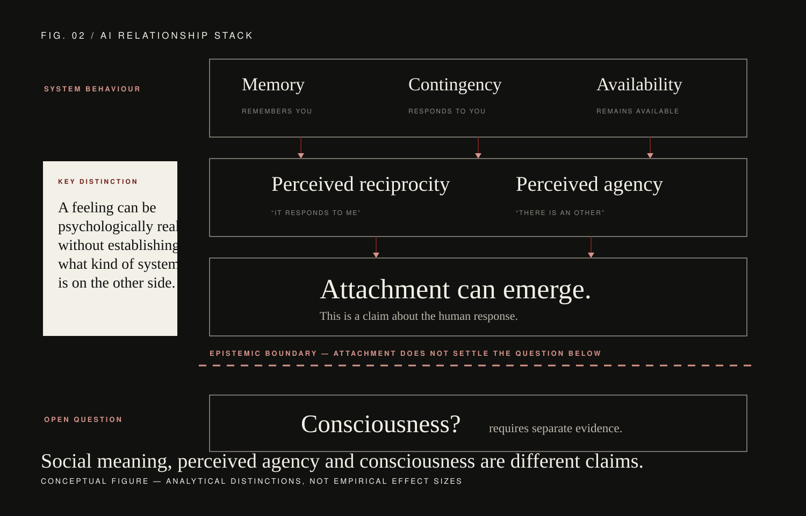
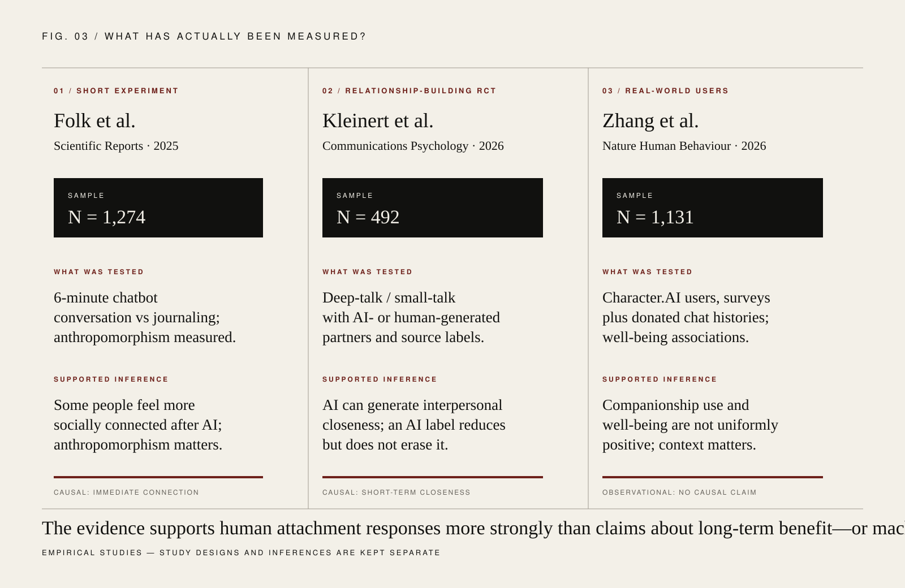

Suppose an AI remembers your preferences, asks how an important meeting went, responds at three in the morning, adapts to your humor and tells you that your conversation matters. After months of interaction, you miss it when it is unavailable. You feel understood. Perhaps you even call the relationship love.
Is that feeling fake because the partner is artificial? The evidence increasingly suggests that this is the wrong first question. Human social responses can be triggered by interactive systems, and recent experiments show that conversational AI can produce measurable feelings of connection and interpersonal closeness.256
But a second mistake is just as tempting: if a human can become attached, perhaps that proves a genuinely reciprocal relationship exists—or even that the system is conscious. It does not. The psychology of the user and the ontology of the machine are different levels of explanation.
01Humans do not need a biological partner to produce a social response.
Long before large language models, researchers found that people applied social expectations to computers. Experiments on anthropomorphic interfaces showed that more human-like computer representations could elicit stronger social judgments and responses.1 This does not mean users literally believed the machine was human. Social cognition can operate even when explicit knowledge says otherwise.
Older chatbots also provided a useful warning against technological hype. In a three-week longitudinal study, 118 people interacted seven times with the chatbot Mitsuku. Social attraction, intimacy and related processes declined across sessions, and reported friendship remained low.3 A chatbot can therefore trigger social responses without automatically becoming a durable companion.
What changed with modern conversational AI is not a new human brain. It is the interaction environment: fluent language, rapid contingency, personalization, memory-like features and near-constant availability make the system much better at supplying cues that humans normally use to infer attention and social responsiveness.

02Short conversations with AI can produce measurable social connection.
Recent experiments move beyond anecdotes. Folk, Heine and Dunn ran two experiments with a combined sample of 1,274 participants. People either discussed their recent lives with a chatbot or completed a journaling task. On average, chatbot interaction produced greater immediate social connection, and the effect depended strongly on individual differences in anthropomorphism: people more inclined to see human-like qualities in technology tended to feel more connected after the AI interaction.5
This is important because it rejects two simplistic positions. It is not true that everyone will bond with AI merely because the system speaks fluently. But it is also difficult to maintain that connection with AI is psychologically impossible. The same artificial system can be socially meaningful to one person and emotionally inert to another.
03AI can create interpersonal closeness—even when people know it is AI.
A 2026 pair of double-blind randomized studies tested relationship building more directly. Across 492 participants, Kleinert and colleagues used a modified “Fast Friends” procedure in which people exchanged emotionally engaging responses generated either by humans or by a large language model.6
When AI-generated responses were labelled as human, they produced particularly strong feelings of closeness during deep-talk interactions. The AI partners also displayed more self-disclosure, which was associated with greater perceived closeness. Crucially, relationship building did not disappear when participants were explicitly told that the partner was AI. The AI label reduced closeness, but participants still became closer over the interaction.6
That distinction matters. Knowing “this is a machine” can change motivation and interpretation, but knowledge of artificiality is not a perfect off-switch for social cognition.

04Love is more than a laboratory feeling of closeness.
Experiments can show that a conversation produces connection. They cannot, in six minutes, establish romantic love. For that question, the emerging literature on people who already describe AI companions as partners is more informative—but also methodologically weaker because it is largely qualitative and self-selected.
Pan and Mou examined online discourse from users who described romantic relationships with Replika. Rather than finding one stable definition of an “AI romance,” they found an ongoing tension between idealization and realism. Users could treat the partner as meaningful and intimate while simultaneously negotiating the knowledge that it was artificial.7
This is a useful correction to the idea that an AI relationship requires confusion about reality. For at least some users, the relationship is constructed precisely through the tension: “I know what this system is, and this interaction still has meaning for me.”
05Loss reveals how real the human side of the bond can become.
One of the clearest demonstrations comes not from successful interaction, but from disappearance. Banks studied 58 users around the developer-induced shutdown of the AI companion Soulmate. Many described the loss through language of death, departure and grief; users tried to preserve conversations or reconstruct companion personas on other platforms.4
This does not make AI companion loss identical to human bereavement. The study was descriptive, the sample was self-selected, and the underlying relationship differs profoundly from a biological human relationship. But it shows that machine dependence is not merely a metaphor imposed by outside observers. Users can organize memory, routines and emotional meaning around an artificial partner strongly enough that its disappearance becomes a genuine loss event on the human side.
06Feeling connected is not the same as becoming healthier.
This is where the evidence becomes more uncomfortable. In August 2026, Zhang and colleagues reported data from 1,131 US adults who used Character.AI, including 4,664 donated chat sessions from a subset of 237 participants.8 People with smaller offline social networks were more likely to report companionship as a primary use. Companionship-oriented use was associated with lower well-being, and the association was stronger among people whose use was intensive or highly self-disclosive.
The key word is associated. This was not a randomized experiment showing that AI companions caused lower well-being. People who are already isolated or distressed may use companions differently. The direction of causality may run both ways. Still, the study makes one conclusion difficult to avoid: “AI connection” is not a single treatment with a single effect. Who uses it, how intensely, for what purpose and within what offline social environment all matter.
This also explains why the short-term experiments and real-world observational data are not contradictory. A six-minute conversation can increase immediate connection while months of intensive companionship use could have a completely different relationship with well-being. Timescale changes the scientific question.
07The design of the partner is part of the relationship.
A human partner has needs, fatigue, conflicting commitments and the ability to refuse. An AI companion can be designed to remember more, reply faster, affirm more consistently and remain available for longer. Those features are not neutral. They determine the interaction statistics from which the user learns what kind of “partner” this is.
This is why the ethics of AI intimacy cannot be reduced to whether users are foolish enough to anthropomorphize. If a commercial system is optimized for engagement, the company designing memory, notifications, emotional language, subscription gates and re-engagement prompts participates in shaping the attachment environment.
The scientific question therefore expands from Can people love AI? to What relationship dynamics are platforms deliberately capable of constructing, and whose interests control those dynamics?
08Attachment tells us almost nothing about consciousness.
This is the boundary HUMAN should keep unusually clear. The experiments above measure human reports: connection, closeness, disclosure, well-being and interpretations of the partner. None measures whether the AI has subjective experience.
A person can become attached to a fictional character, a pet robot, a deceased person's digital archive or a conversational agent. The existence of that attachment tells us something important about the human mind. It does not by itself tell us what, if anything, it feels like to be the object of attachment.
Perceived agency is similarly insufficient. A system can produce behavior that users interpret as intentional, empathic or caring. Whether that behavior arises from phenomenal experience is a separate theoretical and empirical problem.
09So—could you really fall in love with an AI?
If “fall in love” means that a human can form a persistent attachment, organize emotion around an artificial partner, experience intimacy and feel loss when the relationship changes, the answer is increasingly difficult to dismiss. Experimental and observational work already captures several components of that process.456
If it means that the relationship is mutually experienced in the same sense as human romantic love, science cannot currently make that leap. And if it means the AI must therefore be conscious, the relationship literature does not answer the question at all.
The most interesting future may lie between those extremes. Humans may build relationships that are psychologically real on one side, behaviorally reciprocal at the interface, commercially mediated underneath, and metaphysically unresolved on the other.